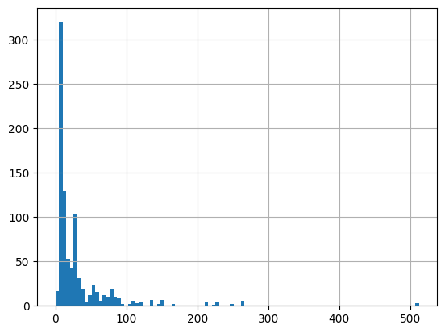
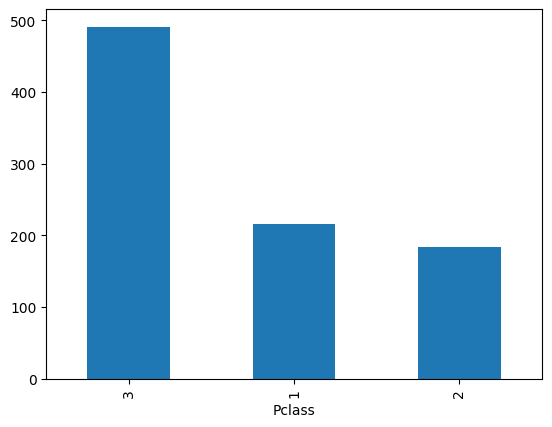
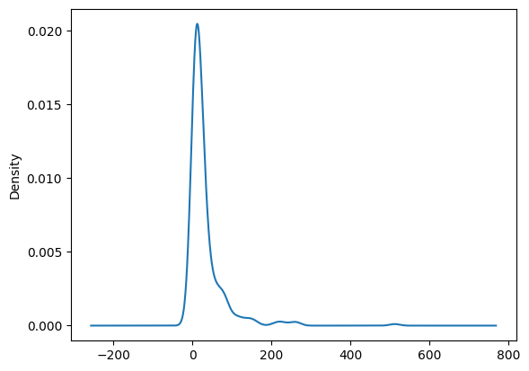

Pandas#
Alta performance e fácil uso para trabalhar com dados
Tem muitas coisas que lembram o Excel
O DataFrame é usado em várias outras bibliotecas de Ciência de Dados
O Pandas vai desde a importação da base, passando por toda a análise exploratória até a exibição de gráficos
# Importando o pandas
import pandas as pd
Conseguimos importar praticamente todas as bases de dados usando o pandas#
Importar uma base em csv:
pd.read_csv(”arquivo_excel.xlsx”)
O arquivo que vamos usar é o
databaseTitanic.csv
# Importando a base em csv
base = pd.read_csv("../../data/databaseTitanic.csv")
E também visualizar todas as informações sobre essa base#
# Visualizando as 5 primeiras linhas
base.head()
| PassengerId | Survived | Pclass | Name | Sex | Age | SibSp | Parch | Ticket | Fare | Cabin | Embarked | |
|---|---|---|---|---|---|---|---|---|---|---|---|---|
| 0 | 1 | 0 | 3 | Braund, Mr. Owen Harris | male | 22.0 | 1 | 0 | A/5 21171 | 7.2500 | NaN | S |
| 1 | 2 | 1 | 1 | Cumings, Mrs. John Bradley (Florence Briggs Th... | female | 38.0 | 1 | 0 | PC 17599 | 71.2833 | C85 | C |
| 2 | 3 | 1 | 3 | Heikkinen, Miss. Laina | female | 26.0 | 0 | 0 | STON/O2. 3101282 | 7.9250 | NaN | S |
| 3 | 4 | 1 | 1 | Futrelle, Mrs. Jacques Heath (Lily May Peel) | female | 35.0 | 1 | 0 | 113803 | 53.1000 | C123 | S |
| 4 | 5 | 0 | 3 | Allen, Mr. William Henry | male | 35.0 | 0 | 0 | 373450 | 8.0500 | NaN | S |
# Visualizando as 5 últimas linhas
base.tail()
| PassengerId | Survived | Pclass | Name | Sex | Age | SibSp | Parch | Ticket | Fare | Cabin | Embarked | |
|---|---|---|---|---|---|---|---|---|---|---|---|---|
| 886 | 887 | 0 | 2 | Montvila, Rev. Juozas | male | 27.0 | 0 | 0 | 211536 | 13.00 | NaN | S |
| 887 | 888 | 1 | 1 | Graham, Miss. Margaret Edith | female | 19.0 | 0 | 0 | 112053 | 30.00 | B42 | S |
| 888 | 889 | 0 | 3 | Johnston, Miss. Catherine Helen "Carrie" | female | NaN | 1 | 2 | W./C. 6607 | 23.45 | NaN | S |
| 889 | 890 | 1 | 1 | Behr, Mr. Karl Howell | male | 26.0 | 0 | 0 | 111369 | 30.00 | C148 | C |
| 890 | 891 | 0 | 3 | Dooley, Mr. Patrick | male | 32.0 | 0 | 0 | 370376 | 7.75 | NaN | Q |
# Tamanho da base
base.shape
(891, 12)
# Visualizando primeiras e últimas linhas e tamanho da base
display(base)
| PassengerId | Survived | Pclass | Name | Sex | Age | SibSp | Parch | Ticket | Fare | Cabin | Embarked | |
|---|---|---|---|---|---|---|---|---|---|---|---|---|
| 0 | 1 | 0 | 3 | Braund, Mr. Owen Harris | male | 22.0 | 1 | 0 | A/5 21171 | 7.2500 | NaN | S |
| 1 | 2 | 1 | 1 | Cumings, Mrs. John Bradley (Florence Briggs Th... | female | 38.0 | 1 | 0 | PC 17599 | 71.2833 | C85 | C |
| 2 | 3 | 1 | 3 | Heikkinen, Miss. Laina | female | 26.0 | 0 | 0 | STON/O2. 3101282 | 7.9250 | NaN | S |
| 3 | 4 | 1 | 1 | Futrelle, Mrs. Jacques Heath (Lily May Peel) | female | 35.0 | 1 | 0 | 113803 | 53.1000 | C123 | S |
| 4 | 5 | 0 | 3 | Allen, Mr. William Henry | male | 35.0 | 0 | 0 | 373450 | 8.0500 | NaN | S |
| ... | ... | ... | ... | ... | ... | ... | ... | ... | ... | ... | ... | ... |
| 886 | 887 | 0 | 2 | Montvila, Rev. Juozas | male | 27.0 | 0 | 0 | 211536 | 13.0000 | NaN | S |
| 887 | 888 | 1 | 1 | Graham, Miss. Margaret Edith | female | 19.0 | 0 | 0 | 112053 | 30.0000 | B42 | S |
| 888 | 889 | 0 | 3 | Johnston, Miss. Catherine Helen "Carrie" | female | NaN | 1 | 2 | W./C. 6607 | 23.4500 | NaN | S |
| 889 | 890 | 1 | 1 | Behr, Mr. Karl Howell | male | 26.0 | 0 | 0 | 111369 | 30.0000 | C148 | C |
| 890 | 891 | 0 | 3 | Dooley, Mr. Patrick | male | 32.0 | 0 | 0 | 370376 | 7.7500 | NaN | Q |
891 rows × 12 columns
Além disso, também podemos ver as informações da base#
# Mostrando somente o tipo dos dados
base.dtypes
PassengerId int64
Survived int64
Pclass int64
Name object
Sex object
Age float64
SibSp int64
Parch int64
Ticket object
Fare float64
Cabin object
Embarked object
dtype: object
# Mostrando o tipo de dados e os valores vazios
base.info()
<class 'pandas.core.frame.DataFrame'>
RangeIndex: 891 entries, 0 to 890
Data columns (total 12 columns):
# Column Non-Null Count Dtype
--- ------ -------------- -----
0 PassengerId 891 non-null int64
1 Survived 891 non-null int64
2 Pclass 891 non-null int64
3 Name 891 non-null object
4 Sex 891 non-null object
5 Age 714 non-null float64
6 SibSp 891 non-null int64
7 Parch 891 non-null int64
8 Ticket 891 non-null object
9 Fare 891 non-null float64
10 Cabin 204 non-null object
11 Embarked 889 non-null object
dtypes: float64(2), int64(5), object(5)
memory usage: 83.7+ KB
# Contando os valores vazios por coluna
base.isnull().sum()
PassengerId 0
Survived 0
Pclass 0
Name 0
Sex 0
Age 177
SibSp 0
Parch 0
Ticket 0
Fare 0
Cabin 687
Embarked 2
dtype: int64
Principais conceitos estatísticos#
dados = {
'X': [1,2,3,4,5,6,7,8,9,10,11]
}
dados = pd.DataFrame(dados)
# Mostrando a média
dados.mean()
X 6.0
dtype: float64
# Mostrando a contagem de registros
dados.count()
X 11
dtype: int64
# Mediana
dados.median()
X 6.0
dtype: float64
# Desvio Padrão
dados.std()
X 3.316625
dtype: float64
# Trazendo todo o resumo estatístico utilizando o describe
dados.describe()
| X | |
|---|---|
| count | 11.000000 |
| mean | 6.000000 |
| std | 3.316625 |
| min | 1.000000 |
| 25% | 3.500000 |
| 50% | 6.000000 |
| 75% | 8.500000 |
| max | 11.000000 |
Voltando para a base do nosso problema
# Trazendo o resumo estatístico para a nossa base
base.describe()
| PassengerId | Survived | Pclass | Age | SibSp | Parch | Fare | |
|---|---|---|---|---|---|---|---|
| count | 891.000000 | 891.000000 | 891.000000 | 714.000000 | 891.000000 | 891.000000 | 891.000000 |
| mean | 446.000000 | 0.383838 | 2.308642 | 29.699118 | 0.523008 | 0.381594 | 32.204208 |
| std | 257.353842 | 0.486592 | 0.836071 | 14.526497 | 1.102743 | 0.806057 | 49.693429 |
| min | 1.000000 | 0.000000 | 1.000000 | 0.420000 | 0.000000 | 0.000000 | 0.000000 |
| 25% | 223.500000 | 0.000000 | 2.000000 | 20.125000 | 0.000000 | 0.000000 | 7.910400 |
| 50% | 446.000000 | 0.000000 | 3.000000 | 28.000000 | 0.000000 | 0.000000 | 14.454200 |
| 75% | 668.500000 | 1.000000 | 3.000000 | 38.000000 | 1.000000 | 0.000000 | 31.000000 |
| max | 891.000000 | 1.000000 | 3.000000 | 80.000000 | 8.000000 | 6.000000 | 512.329200 |
Escolhendo colunas da base#
Buscando por uma coluna:
# Podemos usar o nome da coluna entre aspas
base['Survived']
0 0
1 1
2 1
3 1
4 0
..
886 0
887 1
888 0
889 1
890 0
Name: Survived, Length: 891, dtype: int64
# Ou usar o ponto
base.Survived
0 0
1 1
2 1
3 1
4 0
..
886 0
887 1
888 0
889 1
890 0
Name: Survived, Length: 891, dtype: int64
# Usando uma coluna, podemos contar a quantidade de vezes que cada valor aparece
base.Survived.value_counts()
Survived
0 549
1 342
Name: count, dtype: int64
# Selecionando um conjunto de colunas
base[['Survived','Sex','Age']]
| Survived | Sex | Age | |
|---|---|---|---|
| 0 | 0 | male | 22.0 |
| 1 | 1 | female | 38.0 |
| 2 | 1 | female | 26.0 |
| 3 | 1 | female | 35.0 |
| 4 | 0 | male | 35.0 |
| ... | ... | ... | ... |
| 886 | 0 | male | 27.0 |
| 887 | 1 | female | 19.0 |
| 888 | 0 | female | NaN |
| 889 | 1 | male | 26.0 |
| 890 | 0 | male | 32.0 |
891 rows × 3 columns
Também conseguimos fazer filtros na base#
# Visualizando novamente na base
base.head()
| PassengerId | Survived | Pclass | Name | Sex | Age | SibSp | Parch | Ticket | Fare | Cabin | Embarked | |
|---|---|---|---|---|---|---|---|---|---|---|---|---|
| 0 | 1 | 0 | 3 | Braund, Mr. Owen Harris | male | 22.0 | 1 | 0 | A/5 21171 | 7.2500 | NaN | S |
| 1 | 2 | 1 | 1 | Cumings, Mrs. John Bradley (Florence Briggs Th... | female | 38.0 | 1 | 0 | PC 17599 | 71.2833 | C85 | C |
| 2 | 3 | 1 | 3 | Heikkinen, Miss. Laina | female | 26.0 | 0 | 0 | STON/O2. 3101282 | 7.9250 | NaN | S |
| 3 | 4 | 1 | 1 | Futrelle, Mrs. Jacques Heath (Lily May Peel) | female | 35.0 | 1 | 0 | 113803 | 53.1000 | C123 | S |
| 4 | 5 | 0 | 3 | Allen, Mr. William Henry | male | 35.0 | 0 | 0 | 373450 | 8.0500 | NaN | S |
# Verificando clientes que pagaram mais de 100 libras
base[base.Fare > 100]
| PassengerId | Survived | Pclass | Name | Sex | Age | SibSp | Parch | Ticket | Fare | Cabin | Embarked | |
|---|---|---|---|---|---|---|---|---|---|---|---|---|
| 27 | 28 | 0 | 1 | Fortune, Mr. Charles Alexander | male | 19.00 | 3 | 2 | 19950 | 263.0000 | C23 C25 C27 | S |
| 31 | 32 | 1 | 1 | Spencer, Mrs. William Augustus (Marie Eugenie) | female | NaN | 1 | 0 | PC 17569 | 146.5208 | B78 | C |
| 88 | 89 | 1 | 1 | Fortune, Miss. Mabel Helen | female | 23.00 | 3 | 2 | 19950 | 263.0000 | C23 C25 C27 | S |
| 118 | 119 | 0 | 1 | Baxter, Mr. Quigg Edmond | male | 24.00 | 0 | 1 | PC 17558 | 247.5208 | B58 B60 | C |
| 195 | 196 | 1 | 1 | Lurette, Miss. Elise | female | 58.00 | 0 | 0 | PC 17569 | 146.5208 | B80 | C |
| 215 | 216 | 1 | 1 | Newell, Miss. Madeleine | female | 31.00 | 1 | 0 | 35273 | 113.2750 | D36 | C |
| 258 | 259 | 1 | 1 | Ward, Miss. Anna | female | 35.00 | 0 | 0 | PC 17755 | 512.3292 | NaN | C |
| 268 | 269 | 1 | 1 | Graham, Mrs. William Thompson (Edith Junkins) | female | 58.00 | 0 | 1 | PC 17582 | 153.4625 | C125 | S |
| 269 | 270 | 1 | 1 | Bissette, Miss. Amelia | female | 35.00 | 0 | 0 | PC 17760 | 135.6333 | C99 | S |
| 297 | 298 | 0 | 1 | Allison, Miss. Helen Loraine | female | 2.00 | 1 | 2 | 113781 | 151.5500 | C22 C26 | S |
| 299 | 300 | 1 | 1 | Baxter, Mrs. James (Helene DeLaudeniere Chaput) | female | 50.00 | 0 | 1 | PC 17558 | 247.5208 | B58 B60 | C |
| 305 | 306 | 1 | 1 | Allison, Master. Hudson Trevor | male | 0.92 | 1 | 2 | 113781 | 151.5500 | C22 C26 | S |
| 306 | 307 | 1 | 1 | Fleming, Miss. Margaret | female | NaN | 0 | 0 | 17421 | 110.8833 | NaN | C |
| 307 | 308 | 1 | 1 | Penasco y Castellana, Mrs. Victor de Satode (M... | female | 17.00 | 1 | 0 | PC 17758 | 108.9000 | C65 | C |
| 311 | 312 | 1 | 1 | Ryerson, Miss. Emily Borie | female | 18.00 | 2 | 2 | PC 17608 | 262.3750 | B57 B59 B63 B66 | C |
| 318 | 319 | 1 | 1 | Wick, Miss. Mary Natalie | female | 31.00 | 0 | 2 | 36928 | 164.8667 | C7 | S |
| 319 | 320 | 1 | 1 | Spedden, Mrs. Frederic Oakley (Margaretta Corn... | female | 40.00 | 1 | 1 | 16966 | 134.5000 | E34 | C |
| 325 | 326 | 1 | 1 | Young, Miss. Marie Grice | female | 36.00 | 0 | 0 | PC 17760 | 135.6333 | C32 | C |
| 332 | 333 | 0 | 1 | Graham, Mr. George Edward | male | 38.00 | 0 | 1 | PC 17582 | 153.4625 | C91 | S |
| 334 | 335 | 1 | 1 | Frauenthal, Mrs. Henry William (Clara Heinshei... | female | NaN | 1 | 0 | PC 17611 | 133.6500 | NaN | S |
| 337 | 338 | 1 | 1 | Burns, Miss. Elizabeth Margaret | female | 41.00 | 0 | 0 | 16966 | 134.5000 | E40 | C |
| 341 | 342 | 1 | 1 | Fortune, Miss. Alice Elizabeth | female | 24.00 | 3 | 2 | 19950 | 263.0000 | C23 C25 C27 | S |
| 373 | 374 | 0 | 1 | Ringhini, Mr. Sante | male | 22.00 | 0 | 0 | PC 17760 | 135.6333 | NaN | C |
| 377 | 378 | 0 | 1 | Widener, Mr. Harry Elkins | male | 27.00 | 0 | 2 | 113503 | 211.5000 | C82 | C |
| 380 | 381 | 1 | 1 | Bidois, Miss. Rosalie | female | 42.00 | 0 | 0 | PC 17757 | 227.5250 | NaN | C |
| 390 | 391 | 1 | 1 | Carter, Mr. William Ernest | male | 36.00 | 1 | 2 | 113760 | 120.0000 | B96 B98 | S |
| 393 | 394 | 1 | 1 | Newell, Miss. Marjorie | female | 23.00 | 1 | 0 | 35273 | 113.2750 | D36 | C |
| 435 | 436 | 1 | 1 | Carter, Miss. Lucile Polk | female | 14.00 | 1 | 2 | 113760 | 120.0000 | B96 B98 | S |
| 438 | 439 | 0 | 1 | Fortune, Mr. Mark | male | 64.00 | 1 | 4 | 19950 | 263.0000 | C23 C25 C27 | S |
| 498 | 499 | 0 | 1 | Allison, Mrs. Hudson J C (Bessie Waldo Daniels) | female | 25.00 | 1 | 2 | 113781 | 151.5500 | C22 C26 | S |
| 505 | 506 | 0 | 1 | Penasco y Castellana, Mr. Victor de Satode | male | 18.00 | 1 | 0 | PC 17758 | 108.9000 | C65 | C |
| 527 | 528 | 0 | 1 | Farthing, Mr. John | male | NaN | 0 | 0 | PC 17483 | 221.7792 | C95 | S |
| 537 | 538 | 1 | 1 | LeRoy, Miss. Bertha | female | 30.00 | 0 | 0 | PC 17761 | 106.4250 | NaN | C |
| 544 | 545 | 0 | 1 | Douglas, Mr. Walter Donald | male | 50.00 | 1 | 0 | PC 17761 | 106.4250 | C86 | C |
| 550 | 551 | 1 | 1 | Thayer, Mr. John Borland Jr | male | 17.00 | 0 | 2 | 17421 | 110.8833 | C70 | C |
| 557 | 558 | 0 | 1 | Robbins, Mr. Victor | male | NaN | 0 | 0 | PC 17757 | 227.5250 | NaN | C |
| 581 | 582 | 1 | 1 | Thayer, Mrs. John Borland (Marian Longstreth M... | female | 39.00 | 1 | 1 | 17421 | 110.8833 | C68 | C |
| 609 | 610 | 1 | 1 | Shutes, Miss. Elizabeth W | female | 40.00 | 0 | 0 | PC 17582 | 153.4625 | C125 | S |
| 659 | 660 | 0 | 1 | Newell, Mr. Arthur Webster | male | 58.00 | 0 | 2 | 35273 | 113.2750 | D48 | C |
| 660 | 661 | 1 | 1 | Frauenthal, Dr. Henry William | male | 50.00 | 2 | 0 | PC 17611 | 133.6500 | NaN | S |
| 679 | 680 | 1 | 1 | Cardeza, Mr. Thomas Drake Martinez | male | 36.00 | 0 | 1 | PC 17755 | 512.3292 | B51 B53 B55 | C |
| 689 | 690 | 1 | 1 | Madill, Miss. Georgette Alexandra | female | 15.00 | 0 | 1 | 24160 | 211.3375 | B5 | S |
| 698 | 699 | 0 | 1 | Thayer, Mr. John Borland | male | 49.00 | 1 | 1 | 17421 | 110.8833 | C68 | C |
| 700 | 701 | 1 | 1 | Astor, Mrs. John Jacob (Madeleine Talmadge Force) | female | 18.00 | 1 | 0 | PC 17757 | 227.5250 | C62 C64 | C |
| 708 | 709 | 1 | 1 | Cleaver, Miss. Alice | female | 22.00 | 0 | 0 | 113781 | 151.5500 | NaN | S |
| 716 | 717 | 1 | 1 | Endres, Miss. Caroline Louise | female | 38.00 | 0 | 0 | PC 17757 | 227.5250 | C45 | C |
| 730 | 731 | 1 | 1 | Allen, Miss. Elisabeth Walton | female | 29.00 | 0 | 0 | 24160 | 211.3375 | B5 | S |
| 737 | 738 | 1 | 1 | Lesurer, Mr. Gustave J | male | 35.00 | 0 | 0 | PC 17755 | 512.3292 | B101 | C |
| 742 | 743 | 1 | 1 | Ryerson, Miss. Susan Parker "Suzette" | female | 21.00 | 2 | 2 | PC 17608 | 262.3750 | B57 B59 B63 B66 | C |
| 763 | 764 | 1 | 1 | Carter, Mrs. William Ernest (Lucile Polk) | female | 36.00 | 1 | 2 | 113760 | 120.0000 | B96 B98 | S |
| 779 | 780 | 1 | 1 | Robert, Mrs. Edward Scott (Elisabeth Walton Mc... | female | 43.00 | 0 | 1 | 24160 | 211.3375 | B3 | S |
| 802 | 803 | 1 | 1 | Carter, Master. William Thornton II | male | 11.00 | 1 | 2 | 113760 | 120.0000 | B96 B98 | S |
| 856 | 857 | 1 | 1 | Wick, Mrs. George Dennick (Mary Hitchcock) | female | 45.00 | 1 | 1 | 36928 | 164.8667 | NaN | S |
# Verificando se tiveram clientes que pagaram menos de 5 libras
base[base.Fare < 5]
| PassengerId | Survived | Pclass | Name | Sex | Age | SibSp | Parch | Ticket | Fare | Cabin | Embarked | |
|---|---|---|---|---|---|---|---|---|---|---|---|---|
| 179 | 180 | 0 | 3 | Leonard, Mr. Lionel | male | 36.0 | 0 | 0 | LINE | 0.0000 | NaN | S |
| 263 | 264 | 0 | 1 | Harrison, Mr. William | male | 40.0 | 0 | 0 | 112059 | 0.0000 | B94 | S |
| 271 | 272 | 1 | 3 | Tornquist, Mr. William Henry | male | 25.0 | 0 | 0 | LINE | 0.0000 | NaN | S |
| 277 | 278 | 0 | 2 | Parkes, Mr. Francis "Frank" | male | NaN | 0 | 0 | 239853 | 0.0000 | NaN | S |
| 302 | 303 | 0 | 3 | Johnson, Mr. William Cahoone Jr | male | 19.0 | 0 | 0 | LINE | 0.0000 | NaN | S |
| 378 | 379 | 0 | 3 | Betros, Mr. Tannous | male | 20.0 | 0 | 0 | 2648 | 4.0125 | NaN | C |
| 413 | 414 | 0 | 2 | Cunningham, Mr. Alfred Fleming | male | NaN | 0 | 0 | 239853 | 0.0000 | NaN | S |
| 466 | 467 | 0 | 2 | Campbell, Mr. William | male | NaN | 0 | 0 | 239853 | 0.0000 | NaN | S |
| 481 | 482 | 0 | 2 | Frost, Mr. Anthony Wood "Archie" | male | NaN | 0 | 0 | 239854 | 0.0000 | NaN | S |
| 597 | 598 | 0 | 3 | Johnson, Mr. Alfred | male | 49.0 | 0 | 0 | LINE | 0.0000 | NaN | S |
| 633 | 634 | 0 | 1 | Parr, Mr. William Henry Marsh | male | NaN | 0 | 0 | 112052 | 0.0000 | NaN | S |
| 674 | 675 | 0 | 2 | Watson, Mr. Ennis Hastings | male | NaN | 0 | 0 | 239856 | 0.0000 | NaN | S |
| 732 | 733 | 0 | 2 | Knight, Mr. Robert J | male | NaN | 0 | 0 | 239855 | 0.0000 | NaN | S |
| 806 | 807 | 0 | 1 | Andrews, Mr. Thomas Jr | male | 39.0 | 0 | 0 | 112050 | 0.0000 | A36 | S |
| 815 | 816 | 0 | 1 | Fry, Mr. Richard | male | NaN | 0 | 0 | 112058 | 0.0000 | B102 | S |
| 822 | 823 | 0 | 1 | Reuchlin, Jonkheer. John George | male | 38.0 | 0 | 0 | 19972 | 0.0000 | NaN | S |
Podemos fazer filtros usando E / OU
# Verificando se alguém viajou com esposa E filhos
base[(base.Parch > 1) & (base.SibSp > 1)].head()
| PassengerId | Survived | Pclass | Name | Sex | Age | SibSp | Parch | Ticket | Fare | Cabin | Embarked | |
|---|---|---|---|---|---|---|---|---|---|---|---|---|
| 27 | 28 | 0 | 1 | Fortune, Mr. Charles Alexander | male | 19.0 | 3 | 2 | 19950 | 263.000 | C23 C25 C27 | S |
| 59 | 60 | 0 | 3 | Goodwin, Master. William Frederick | male | 11.0 | 5 | 2 | CA 2144 | 46.900 | NaN | S |
| 63 | 64 | 0 | 3 | Skoog, Master. Harald | male | 4.0 | 3 | 2 | 347088 | 27.900 | NaN | S |
| 68 | 69 | 1 | 3 | Andersson, Miss. Erna Alexandra | female | 17.0 | 4 | 2 | 3101281 | 7.925 | NaN | S |
| 71 | 72 | 0 | 3 | Goodwin, Miss. Lillian Amy | female | 16.0 | 5 | 2 | CA 2144 | 46.900 | NaN | S |
Uma forma muito útil de fazer seleção de dados é usando o .loc() ou o .iloc()#
# O .loc() permite fazer a busca da mesma forma acima
base.loc[(base.Parch > 1) & (base.SibSp > 1)].head()
| PassengerId | Survived | Pclass | Name | Sex | Age | SibSp | Parch | Ticket | Fare | Cabin | Embarked | |
|---|---|---|---|---|---|---|---|---|---|---|---|---|
| 27 | 28 | 0 | 1 | Fortune, Mr. Charles Alexander | male | 19.0 | 3 | 2 | 19950 | 263.000 | C23 C25 C27 | S |
| 59 | 60 | 0 | 3 | Goodwin, Master. William Frederick | male | 11.0 | 5 | 2 | CA 2144 | 46.900 | NaN | S |
| 63 | 64 | 0 | 3 | Skoog, Master. Harald | male | 4.0 | 3 | 2 | 347088 | 27.900 | NaN | S |
| 68 | 69 | 1 | 3 | Andersson, Miss. Erna Alexandra | female | 17.0 | 4 | 2 | 3101281 | 7.925 | NaN | S |
| 71 | 72 | 0 | 3 | Goodwin, Miss. Lillian Amy | female | 16.0 | 5 | 2 | CA 2144 | 46.900 | NaN | S |
# Ele também permite usar argumentos lógicos
base.loc[(base.Parch > 1) | (base.SibSp > 1)].head()
| PassengerId | Survived | Pclass | Name | Sex | Age | SibSp | Parch | Ticket | Fare | Cabin | Embarked | |
|---|---|---|---|---|---|---|---|---|---|---|---|---|
| 7 | 8 | 0 | 3 | Palsson, Master. Gosta Leonard | male | 2.0 | 3 | 1 | 349909 | 21.0750 | NaN | S |
| 8 | 9 | 1 | 3 | Johnson, Mrs. Oscar W (Elisabeth Vilhelmina Berg) | female | 27.0 | 0 | 2 | 347742 | 11.1333 | NaN | S |
| 13 | 14 | 0 | 3 | Andersson, Mr. Anders Johan | male | 39.0 | 1 | 5 | 347082 | 31.2750 | NaN | S |
| 16 | 17 | 0 | 3 | Rice, Master. Eugene | male | 2.0 | 4 | 1 | 382652 | 29.1250 | NaN | Q |
| 24 | 25 | 0 | 3 | Palsson, Miss. Torborg Danira | female | 8.0 | 3 | 1 | 349909 | 21.0750 | NaN | S |
# Ele permite filtrar colunas de forma muito prática
base.loc[(base.Parch > 1) | (base.SibSp > 1), ['PassengerId','Parch','SibSp']].head()
| PassengerId | Parch | SibSp | |
|---|---|---|---|
| 7 | 8 | 1 | 3 |
| 8 | 9 | 2 | 0 |
| 13 | 14 | 5 | 1 |
| 16 | 17 | 1 | 4 |
| 24 | 25 | 1 | 3 |
Já o .iloc() vai usar o índice para filtrar
# Buscando as linhas de 30 (inclusive) a 40 (exclusive)
base.iloc[30:40]
| PassengerId | Survived | Pclass | Name | Sex | Age | SibSp | Parch | Ticket | Fare | Cabin | Embarked | |
|---|---|---|---|---|---|---|---|---|---|---|---|---|
| 30 | 31 | 0 | 1 | Uruchurtu, Don. Manuel E | male | 40.0 | 0 | 0 | PC 17601 | 27.7208 | NaN | C |
| 31 | 32 | 1 | 1 | Spencer, Mrs. William Augustus (Marie Eugenie) | female | NaN | 1 | 0 | PC 17569 | 146.5208 | B78 | C |
| 32 | 33 | 1 | 3 | Glynn, Miss. Mary Agatha | female | NaN | 0 | 0 | 335677 | 7.7500 | NaN | Q |
| 33 | 34 | 0 | 2 | Wheadon, Mr. Edward H | male | 66.0 | 0 | 0 | C.A. 24579 | 10.5000 | NaN | S |
| 34 | 35 | 0 | 1 | Meyer, Mr. Edgar Joseph | male | 28.0 | 1 | 0 | PC 17604 | 82.1708 | NaN | C |
| 35 | 36 | 0 | 1 | Holverson, Mr. Alexander Oskar | male | 42.0 | 1 | 0 | 113789 | 52.0000 | NaN | S |
| 36 | 37 | 1 | 3 | Mamee, Mr. Hanna | male | NaN | 0 | 0 | 2677 | 7.2292 | NaN | C |
| 37 | 38 | 0 | 3 | Cann, Mr. Ernest Charles | male | 21.0 | 0 | 0 | A./5. 2152 | 8.0500 | NaN | S |
| 38 | 39 | 0 | 3 | Vander Planke, Miss. Augusta Maria | female | 18.0 | 2 | 0 | 345764 | 18.0000 | NaN | S |
| 39 | 40 | 1 | 3 | Nicola-Yarred, Miss. Jamila | female | 14.0 | 1 | 0 | 2651 | 11.2417 | NaN | C |
# Também posso usar para buscar apenas colunas específicas
base.iloc[30:40,3:6]
| Name | Sex | Age | |
|---|---|---|---|
| 30 | Uruchurtu, Don. Manuel E | male | 40.0 |
| 31 | Spencer, Mrs. William Augustus (Marie Eugenie) | female | NaN |
| 32 | Glynn, Miss. Mary Agatha | female | NaN |
| 33 | Wheadon, Mr. Edward H | male | 66.0 |
| 34 | Meyer, Mr. Edgar Joseph | male | 28.0 |
| 35 | Holverson, Mr. Alexander Oskar | male | 42.0 |
| 36 | Mamee, Mr. Hanna | male | NaN |
| 37 | Cann, Mr. Ernest Charles | male | 21.0 |
| 38 | Vander Planke, Miss. Augusta Maria | female | 18.0 |
| 39 | Nicola-Yarred, Miss. Jamila | female | 14.0 |
Por fim, conseguimos fazer gráficos com o Pandas de forma bem simples#
import matplotlib.pyplot as plt
# É possível fazer um histograma simples
base.Fare.hist(bins=100);

# Gráficos de barras
base.Pclass.value_counts().plot.bar()
<Axes: xlabel='Pclass'>

# E até gráficos mais complexos como o de densidade
base['Fare'].plot.kde();
